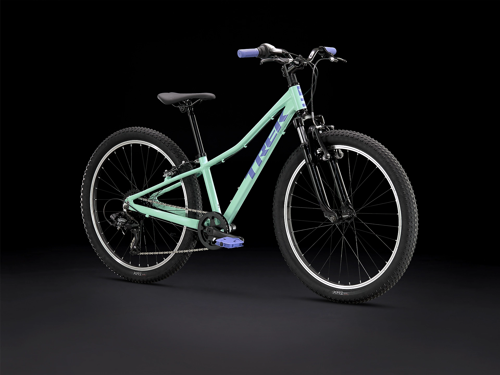
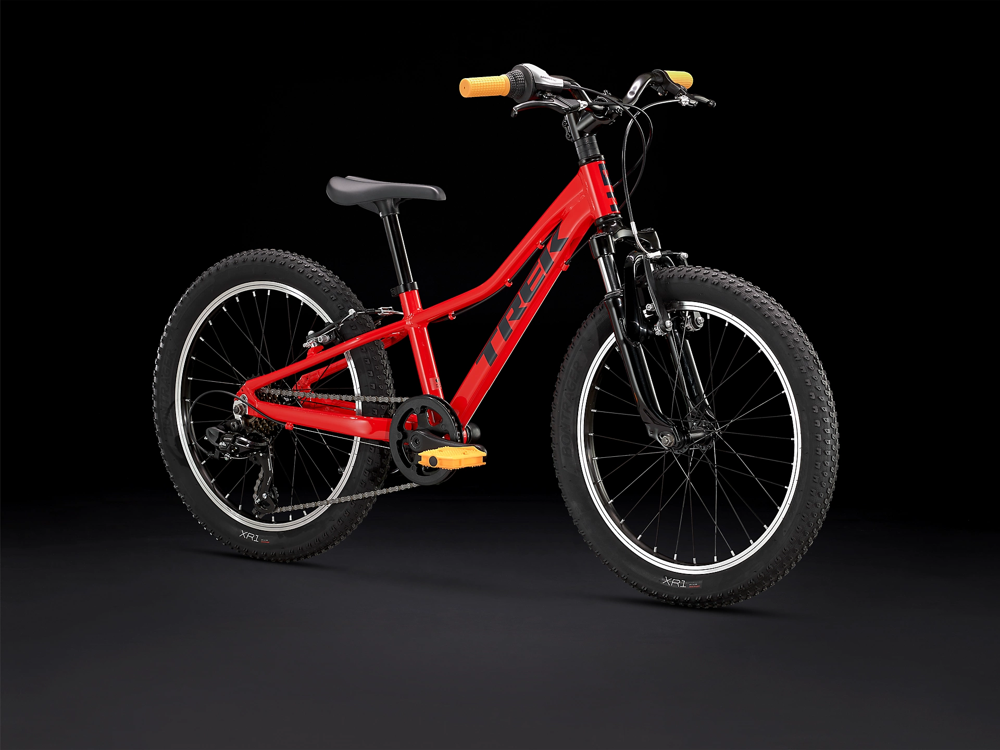
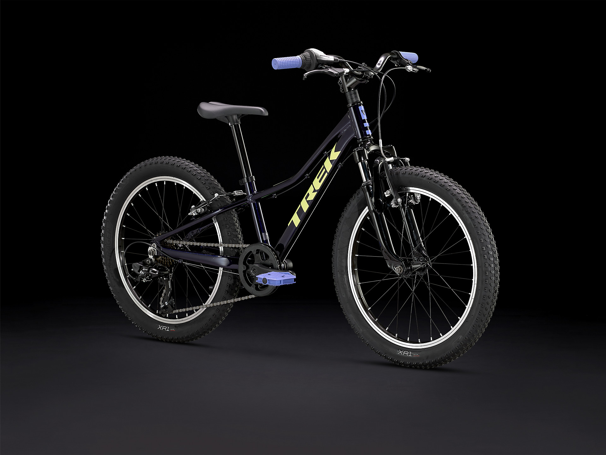
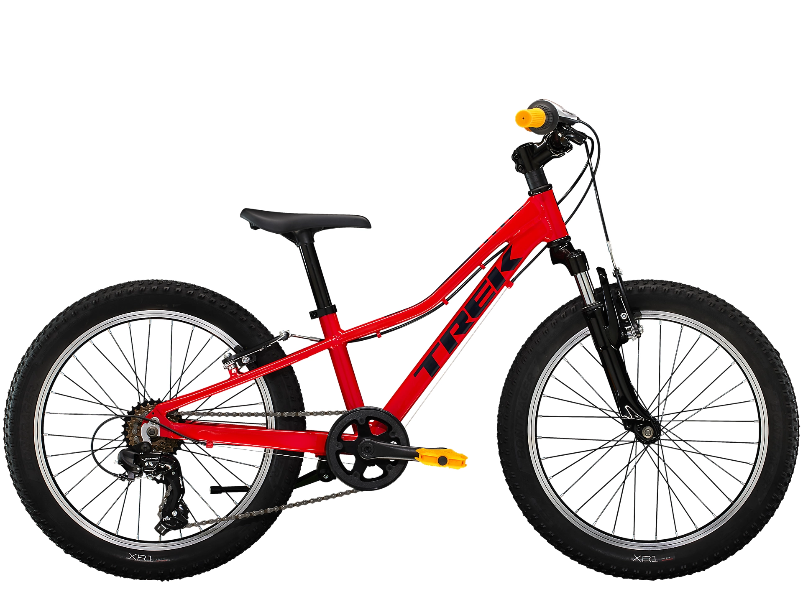
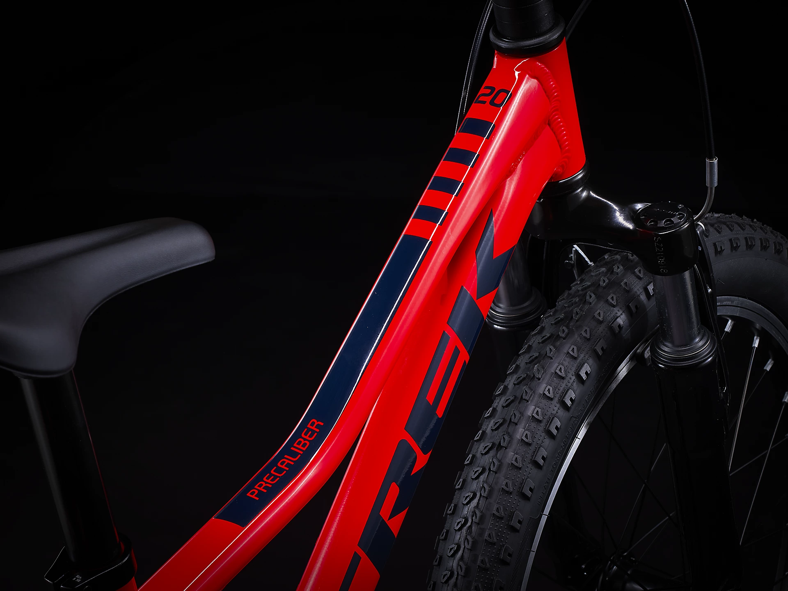

Bicicletas híbridas infantis Precaliber Precaliber 20 de 7 velocidades
R$ 3.699,00
Bicicleta híbrida infantil
Bicicleta híbrida infantil
Bicicleta híbrida infantil
Bicicleta híbrida infantil





Descrição da Bicicleta
A Precaliber 20 de 7 velocidades é uma bicicleta infantil robusta destinada aos jovens aventureiros.
Ela tem quadro leve e componentes de qualidade, como garfo de suspensão dianteiro,
7 marchas e freios de mão do tamanho perfeito para as pequenos ciclistas.
Para crianças com idades entre os 6 e 8 anos, entre 1,15 e 1,30 de altura.